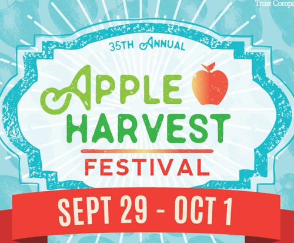

Ithaca's premier event of the Fall, the Apple Harvest Festival, or Apple Fest, is a three day celebration of food, fun, and apples!
 The 35th Annual Great Downtown Ithaca Apple Harvest Festival presented by Tompkins Trust Company is set to take place September 29-October 1, 2017. The 2017 Apple Harvest Festival hosts plenty of apples, local produce, fresh baked goods,family entertainment at every turn, games, rides, prizes and live performances on two stages. Apple Harvest Festival is a great introduction to the rich farm and artist community of Ithaca. First time visitors can witness a variety of wonderful local entertainment while also visiting the historical outdoor pedestrian shopping mall, The Ithaca Commons.The pedestrian mall is the epicenter of the festival and the gateway to a nostalgic journey to harvest season fun.
Over 100 vendors will be selling unique apple varieties, hot apple cider donuts,kettle corn, local farm fresh baked goods and a multitude of around the world specialties. Local farmers are on site selling everything from tasty apple beverages to local pumpkins and of course, apples, apples and more apples. Wineries and cideries have regional beverages available for tasting and purchase. Kids can visit with the goats and learn how fiber is made with Laughing Goat Fiber Farm. Looking for quality goods, visit over 60 different handcrafting artisans along Cayuga Street at the fall craft show which includes jewelry, ceramics, home decor, body care, specialty gifts, unique sculpture, clothing and so much more.
Note: Logo and description are from the Downtown Ithaca Webpage